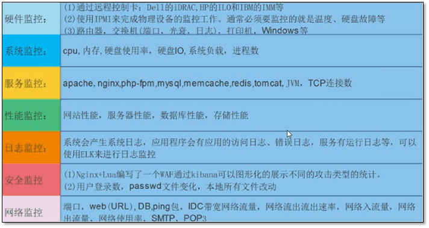

zabbix基本知识

安装步骤
1.安装mysql
yum install -y mysql-server mysql-devel mysql php php-mysql
//数据库操作
mysqladmin -uroot -h127.0.0.1 password "123456" //设置数据库密码
mysql -uroot -h127.0.0.1 -p //进入数据库
create database zabbix character set utf8; //创建zabbix数据库且设置字符集
grant all privileges on *.* to root@'%' identified by '123456'; //授权
flush privileges; //刷新生效
exit;
//解压zabbix
yum install http://repo.zabbix/2.4/rhel/6/x86_64/zabbix-release-2.4-1.el6.noarch.rpm
或者
rpm -ivh http://repo.zabbix.com/zabbix/3.0/rhel/7/x86_64/zabbix-release-3.0-1.el7.noarch.rpm
或者
wget http://nchc.dl.sourceforge.net/project/zabbix/ZABBIX%20Latest%20Stable/2.4.5/zabbix-2.4.5.tar.gz
如果没有安装wget
yum install -y wget
tar -zxvf zabbix-2.4.5.tar.gz
cd zabbix-2.4.5.tar.gz
mysql -uroot -h192.168.1.106 -p123456 -Dzabbix<database/mysql/schema.sql；
mysql -uroot -h192.168.1.106 -p123456 -Dzabbix<database/mysql/images.sql;
mysql -uroot -h192.168.1.106 -p123456 -Dzabbix<database/mysql/data.sql;
# 可以检验一下是否创建成功
//编译zabbix之前需要安装依赖(安装zabbix_server/zabbix_agent根据这两个选项 --enable-server --enable-agent[待测试])
yum install -y pcre* curl-devel libevent-devel net-snmp-devel gcc gcc-c++
yum -y groupinstall "Development tools"
/usr/local/tools/zabbix-2.4.5/configure --sysconfdir=/etc/zabbix/ --enable-server --enable-agent --enable-proxy
--prefix=/usr/local/zabbix --with-net-snmp --with-libcurl --with-mysql=/usr/bin/mysql_config
make && make install
//安装apache
yum install -y httpd
//整理zabbix访问界面
mkdir /var/www/html/zabbix
cd /usr/local/tools/zabbix-2.4.5/frontends/php
cp -a . /var/www/html/zabbix
chown -R apache:apache /var/www/html/zabbix
//修改apache配置文件
vim /etc/httpd/conf/httpd.conf
ServerName 127.0.0.1
<VirtualHost *:80>
DocumentRoot "/var/www/html"
ServerName 192.168.239.130
</VirtualHost>
//修改zabbix_server配置文件
grep -v "^#" /etc/zabbix/zabbix_server.conf
LogFile=/tmp/zabbix_server.log
DBHost=192.168.1.106
DBName=zabbix
DBUser=root
DBPassword=123456
//创建用户及用户组
groupadd -g 201 zabbix
useradd -g zabbix -u 201 -m zabbix
//启动服务
service mysqld restart
service httpd start
/usr/local/sbin/zabbix_server
/usr/local/sbin/zabbix_agent
/usr/local/sbin/zabbix_agentd
//关闭防火墙访问zabbix
service iptables stop
http://192.168.1.106/zabbix/setup.php
//进入界面报错问题
service iptables stop
setenforce 0
//将zabbix服务添加至service
cp /usr/local/sbin/zabbix_* /etc/init.d/
chmod +x /etc/init.d/zabbix_*
现在可以使用如下命令了
service zabbix_server start
service zabbix_agent start
service zabbix_agentd start
批量杀zabbix进程 pkill -f zabbix
基础知识
装一个server端，各个机器节点装一个agent端
查看安装rpm_zabbix安装了哪些东西?
rpm -ql zabbix-release
修改mysql字符集编码：
character-set-server = utf8
init-connect = 'SET NAMES utf8'
collation-server = utf8_general_ci
访问：10.0.0.7/zabbix
默认用户信息：Admin zabbix
agent配置链接server服务地址：vi /etc/zabbix/zabbix_agentd.conf
85行：Server=10.0.0.7
启动zabbix_agent: /etc/init.d/zabbix-agent start
查看启动服务对应端口命令：netstat -ntlp
打开监听进程文件：lsof -i:10050
监控机制：首先通过监控数值，然后设置触发器，来报警。
自定义监控
zabbix自定义监控和图表
1.创建新的组机组
configuration->host groups->new name->success
修改主机名称 vi /etc/sysconfig/network
主机名称文件生效 hostname host_name
域名解析 vi /etc/hosts
10.0.0.7 linux-node1.example.com linux-node1
10.0.0.8 linux-node2.example.com linux-node2
验证域名解析配置 ping 10.0.0.7 / ping 10.0.0.8
2.创建新的host
hostname linux-node2.example.com
visible name linux-node2
groups demo
agent interface 10.0.0.8
3.创建templates
templates->link new template->Template OS linux x->add
4.自定义参数
vi /etc/zabbix/zabbix_agent.conf
UserParameter=login-user,uptime | awk -F '' '{print $5}'
重新启动
/etc/init.d/zabbix-agent restart
如果报错服务器端安装zabbix-get
yum install zabbix-get
/usr/local/bin/zabbix_get -s 127.0.0.1 -k login-user
3.创建item
name login-user
type zabbix_agent
key login-user
new application demo
4.创建graph
name demo
然后在右上角选择group->host->login-user
5.在monitoring中查看
monitoring->graphs 右上角的加号是用来添加任务，便于上来后第一眼查看/操作
流量分析
流量分析
zabbix可以进行硬件监控/系统监控/网络监控/应用监控/自动化监控/流量监控(pv)
seo:搜索引擎优化(关键字/内敛和外链)
pv：page v->页面浏览量
uv：user v->用户量
用户访问统计：百度统计？piwik
自定义报警
zabbix自定义报警
1.创建触发器
2.设置报警声音profile->messaging->frontend messing
查看报警记录：monitoring->events(事件)
对每一个报警信息进行阐述: last 20 issues->awk
当报警后触发事件：confiuration->actions
当一个报警1-3次内未处理，会发给上级等等
3.自定义报警脚本位置：
vi /etc/zabbix/zabbix_server.conf
AlertScriptsPath=/usr/local/share/zabbix/alertscripts
5.创建一个发信息脚本
vi Send_Mail.sh
echo $1 $2 $3 >> /tmp/test
6.zabbix配置
路径：administration->media types->create media type
name:Send_Mail
Type:Script
Script name:Send_Mail.sh
type:Send_Mail
7.如果没有发送：查看configuration->actions->operations
send only to:send_mail
监控可视化
监控可视化
查看视图：monitroring(监控)->screen
这些可以自定义创建图形
监控必须和触发器联合使用(知道并且要处理)
分布式监控
分布式监控
zabbix运行的两种模式:被动模式(默认[针对zabbix-agent来说])/主动模式
主动模式:zabbix agent(active)
1.克隆linux模板和zabbix_agent：
configuration->template->template->full clone
模式名添加active->save
克隆两个模板之后，需要将linux模板中link templates中的链接改成新增的active结尾的
过滤查看配置文件中非注释部分 grep '^[a-Z]' /etc/zabbix/zabbix_agentd.conf
修改改配置文件：
StartAgents=0
ServerActive=10.0.0.7(serverIP)
Hostname=linux-node2.example.com
设置linux active所有模板的被动模式 configurare->hosts->linux active->items->mass update
还有zabbix_agent active模板的被动模式： zabbix_agent active->mass uodate
2.分布式部署：
查看zabbix样本源：cat /etc/yum.repos.d/zabbix.repo
yum install -y zabbix-proxy zabbix-proxy-mysql mysql-server
查看zabbix-proxy安装的软件：rpm -ql zabbix-proxy
启动安装的mysql：/etc/init.d/mysqld start
创建数据库：create database zabbix_proxy character set utf-8;
grant all on zabbix_proxy.* to zabbix@localhost identified by 'zabbix'
执行自带脚本文件
use zabbix_proxy
source /usr/share/doc/zabbix-proxy-mysql-2.4.6/create/schema.sql
3.修改zabbix_proxy配置文件：
vi /etc/zabbix/zabbix_proxy.conf
默认为主动模式
设置ProxyMode=0
Server=10.0.0.7(zabbix_server地址)
Hostname=proxy-node1
DBName=zabbix_proxy
DBUser=zabbix
DBPassword=zabbix
启动zabbix_proxy服务：/etc/init.d/zabbix-proxy start
netstat -ntlp 查看10051端口
在zabbix-server上面添加上zabbix-proxy
administation->proxies->create proxy
proxy name:proxy-node1
proxy mode:active（主动）
->add
新添加主机：create host->
host name:linux-node2.example.com
visible name:linux-node2
groups:linux servers
agent:10.0.0.8
monitored by proxy:proxy-node1
添加模板：template：template os linux active
将agent-server改成zabbix-proxy的IP地址：
vi /etc/zabbix/zabbix_agentd.conf
ServerActive=10.0.0.8
重启agent：/etc/init.d/zabbix-agent restart
核心思想和步骤：
1.zabbix-agent处于主动模式
2.zabbix-proxy处于主动模式
自动化监控
zabbix自动化监控
自动注册，主动发现，zabbix api
1.自动注册
vi /etc/zabbix/zabbix_agentd.conf
HostMetadataItem=system.uname
查看system.uname的输出：zabbix_get -get -s 10.0.0.7 -k system.uname
重新启动：/etc/init.d/zabbix-agent restart
步骤：
configuration->actions(动作)->
name:agent自动注册
new condition:proxy proxy-node1
host metadata like linux
operations:
add host
add to host groups:linux servers
link to template:template os linux active
删除主机且关闭actions
2.主动发现
vi /etc/zabbix/zabbix_agentd.conf
改为主动模式：
Server：127.0.0.1->10.0.0.7
StartAgents=3
ServerActive=10.0.0.8->127.0.0.1
/etc/init.d/zabbix-agent restart
步骤：
1.扫描IP
configuration->discovery
name:local主动发现
discovery by proxy:no proxy
ip range:10.0.0.6-9
delay:60
checks:zabbix agent system.uname
uniqueness: ip address
2.创建action(动作)
注意选择右上角的discovery
conditions：
and/or(a and b and c)
received value like linux
discovery status=up
service type=zabbix agent
operations:
add host
add to host groups
link to template
然后在创建完成后status=enabled启用
查看是否已经成功添加主机：monitoring->events->右上角选择source：discover
然后点击hosts即可查看到(注意右上角的event:discovery[事件来源])
删除：
1.将新创建的主机删除
2.将discovery和auto registration中的actions动作关闭
3.zabbix API(远程管理zabbix/远程查询)
第一个例子：
curl -s -X POST -H 'Content-Type:application/json' -d
'{
"jsonrpc":"2.0",
"method":"user.login",
"params":{
"user":"Admin",
"password":"zabbix"
},
"id":1
}' http://10.0.0.7/zabbix/api_jsonrpc.php |python -mjson.tool
//获取token
第二个例子：
curl -s -X POST -H ‘Content-Type:application/json’ -d
'{
"jsonrpc":"2.0",
"method":"host.get",
"params":{
"output":{"host"}
},
"auth":"上面获取的token"
"id":2
}' http://10.0.0.7/zabbix/api_jsonrpc.php | python -mjson.tool
第三个例子：创建新主机
curl -s -X POST -h 'Content-Type:application/json' -d
'{
"jsonrpc":"2.0",
"method":"host.create",
"params":{
"host":"linunx server"
"interfaces":{
"type":1,
"main":1,
"useip":1,
"ip":"10.0.0.8",
"dns":"",
"port":"10050"
},
"groups":{
"groupid":"2"
},
"templates":[
{
"templateid":"10001"
}]
},
"auth":"上面的token"，
"id":1
}' http://10.0.0.7/zabbix/api_jsonrpc.php |grep python -mjson.tool